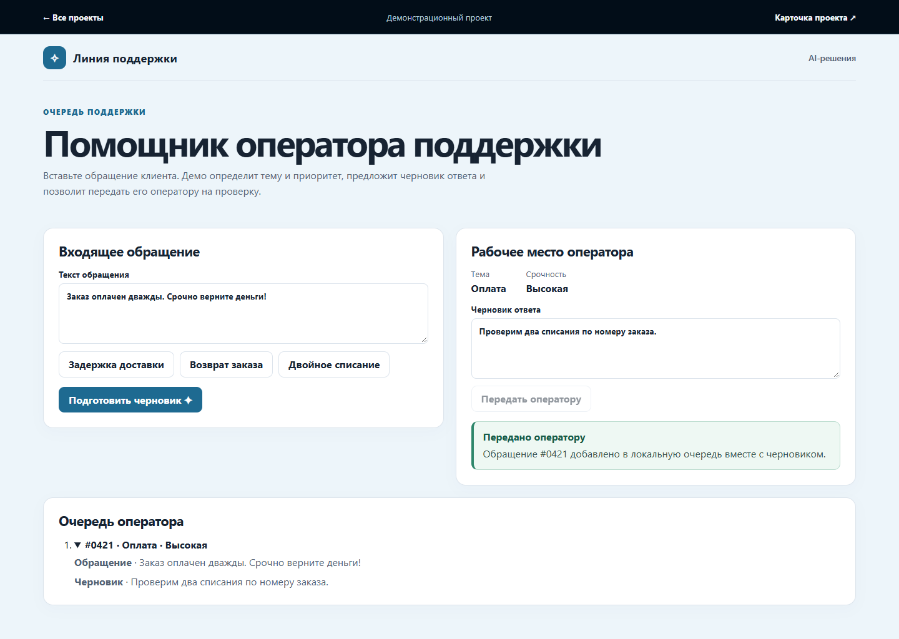

AI-решения / Демонстрационный проект
Помощник оператора поддержки
Для службы поддержки, которая обрабатывает поток однотипных запросов. Оператор быстрее видит срочные обращения и может исправить предложенный ответ.
Что умеет решение
Демо определяет тему и срочность по словам в обращении и предлагает черновик. После редактирования обращение попадает в локальную очередь вместе с черновиком. Срочные обращения отображаются первыми.
Попробуйте в демо
Выберите «Двойное списание», подготовьте черновик и отредактируйте его. Передайте обращение оператору и раскройте его в очереди.

Очередь хранится в пределах открытой страницы. Сторонний аналог на GitHub ↗

